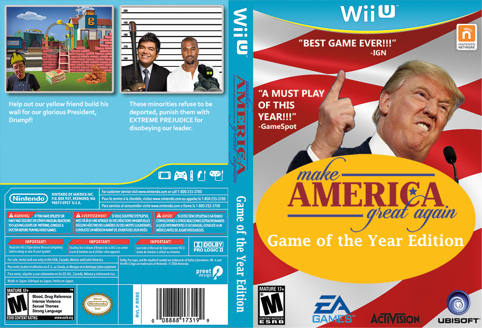

For the "Lie to me" project, I decided to make a fake video game cover art for a game called Make America Great Again: The Game. This game, for the Wii U, is about what if Donald Trump ended up being the next U.S. president. Although the the work is meant to be humorous, and therefore counts as satire, there is some truth to the jokes I made in the cover art. Coincidentally, the idea actually came up while watching a video of Last Week Tonight with John Oliver. In the video I watched Oliver attempts to persuade the audience why we Americans should not vote for Trump. He provides strong concrete evidence and counterarguments for whatever reason people would support Trump.
The choice to making it a cover art for a game was chosen because I felt I could easily tell a story of Trump's reign of terror with gameplay aspects based off of his policies. They are meant to be offensive and racist in order to accurately reflect Trump as a president. At times though I felt as though I might be going a little bit too far especially since I was turning this in as an assignment. However, I decided to just stick with it since the current form provokes more of an emotional response.
